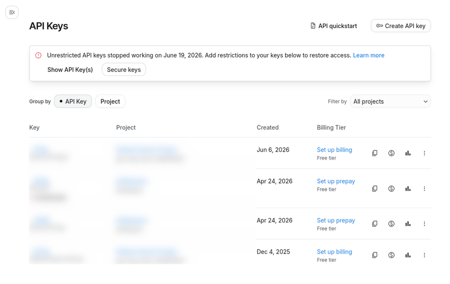
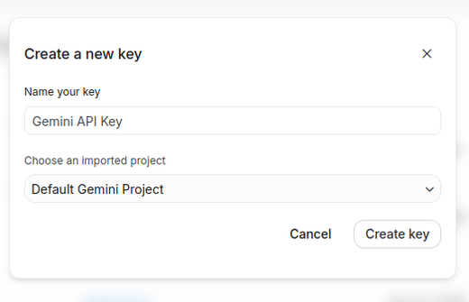

Supaya Amadeus bisa diajak bicara, dia butuh satu model bahasa untuk menjawab. Ada tiga tempat yang gampang, dan semuanya punya pilihan gratis. Sekitar lima menit.
| Nama | bebas, misalnya OpenCode |
|---|---|
| Model | mimo-v2.5-free |
| Alamat API | https://opencode.ai/zen/v1 |
| API key | kunci yang barusan kamu salin |
Klik Simpan, lalu buka chatnya dengan Ctrl+Shift+M.
Yang perlu kamu tahu sebelum daftar: waktu mendaftar, OpenCode Zen meminta detail penagihan (kartu) walaupun kamu cuma memakai model gratis.
Model gratisnya juga sementara — tulisan "limited time" ada di dokumentasi mereka. Kalau suatu hari jawabannya berhenti, kemungkinan besar modelnya sudah ditarik; ganti ke yang lain dari daftar.

Default Gemini Project sudah cukup), lalu Create key:

| Nama | misalnya Google Gemma |
|---|---|
| Model | gemma-4-31b-it |
| Alamat API | https://generativelanguage.googleapis.com/v1beta/openai |
Kalau kamu sudah punya kunci lama yang ditandai Unrestricted, kunci itu sudah berhenti bekerja — Google mematikannya sejak 19 Juni 2026. Tambahkan pembatasan lewat tombol Secure keys di halaman itu, atau buat kunci baru. Kunci yang dibuat sekarang sudah otomatis aman.
Model ini menarasikan penalarannya sebelum menjawab.
Add-on ini membuangnya, jadi yang kamu lihat cuma jawabannya. Kalau suatu
saat kamu memakai model yang menolak system instruction, ada
system_in_user di config lanjutan — personanya digabungkan
ke pesan pertamamu.
anki.sk-or-v1-.| Model | yang berakhiran :free, misalnya
z-ai/glm-5.2:free |
|---|---|
| Alamat API | https://openrouter.ai/api/v1 |
Model gratis OpenRouter punya batas permintaan per hari; batasnya lebih longgar kalau akunmu pernah membeli kredit. Angkanya sesekali berubah, jadi lihat di FAQ mereka.
Daftar model OpenCode Zen yang sedang hidup bisa dilihat langsung di
opencode.ai/zen/v1/models
— yang namanya berakhiran -free tidak menagih biaya. Untuk
OpenRouter, ada di
openrouter.ai/models.
Ini yang paling penting. Amadeus bisa mengirim isi kartu yang sedang terbuka, catatan "yang perlu dia ingat tentang kamu", dan angka belajarmu ke model yang kamu pilih.
Sebagian model gratis — di kedua layanan — memakai data yang masuk untuk
memperbaiki model mereka selama masa gratisnya. Termasuk
mimo-v2.5-free yang disarankan di atas. Model gratis
Nemotron bahkan ditandai "trial use only — do not submit personal or
confidential data".
Kalau kartumu atau catatanmu berisi hal pribadi, matikan "Beri tahu dia kartu yang sedang terbuka" di pengaturan, atau pakai model berbayar yang menjanjikan tidak menyimpan data.
| Pesannya menyebut 401 | Kuncinya salah salin, atau ada spasi ikut tersalin di depan/belakang. Salin ulang. |
|---|---|
| Menyebut 429 | Batas hariannya habis, atau terlalu cepat berturut-turut. Tunggu, atau ganti model. |
| Menyebut 404 atau "model not found" | Nama modelnya salah ketik, atau modelnya sudah ditarik. Salin persis dari daftar model. |
| Menyebut 400 atau "model is unavailable" | Nama modelnya benar, tapi akunmu belum boleh memakainya. Di OpenCode Zen, model gratis pun butuh akun yang sudah punya detail penagihan. Bisa juga model itu sedang penuh — coba model gratis lain dulu. |
| Tidak ada yang terjadi | Pastikan Aktifkan chat menyala, dan Anki sudah di-restart setelah add-on dipasang. |
Ragu setelan providernya benar? Ada tombol Tes koneksi di sebelah tombol panduan: dia mengirim satu permintaan kecil dan menampilkan jawabannya apa adanya, jadi kamu tahu yang salah kunci, nama model, atau akunnya.
Kunci itu seperti password: siapa pun yang punya bisa memakai akunmu. Jangan tempel di Discord atau tertinggal di screenshot. Kalau bocor, hapus kuncinya di halaman tempat kamu membuatnya, lalu buat yang baru.
Kalau kamu tidak mau kuncinya tersimpan di dalam config.json,
di config lanjutan ada api_key_env untuk membacanya dari
environment variable, atau api_key_file +
api_key_path untuk membacanya dari file JSON di luar Anki.
For Amadeus to talk back, she needs a language model to answer with. Two places are easy, and both have free models. About five minutes.
| Nama (name) | anything, e.g. OpenCode |
|---|---|
| Model | mimo-v2.5-free |
| Alamat API (API address) | https://opencode.ai/zen/v1 |
| API key | the key you just copied |
Click Simpan (save), then open the chat with
Ctrl+Shift+M.
Before you sign up: OpenCode Zen asks for billing details at sign-up even if you only ever use the free models.
Those free models are also temporary — their docs say "limited time". If answers stop one day, the model has most likely been withdrawn; pick another from the list.
Default Gemini Project is fine), then Create key:
| Nama (name) | e.g. Google Gemma |
|---|---|
| Model | gemma-4-31b-it |
| Alamat API (API address) | https://generativelanguage.googleapis.com/v1beta/openai |
If you have an older key marked Unrestricted, it has already stopped working — Google switched those off on 19 June 2026. Add restrictions with the Secure keys button on that page, or make a new one. Keys created now are restricted from the start.
This model narrates its reasoning before answering. The
add-on strips that, so you only see the reply. If you ever use a model
that refuses a system instruction, the advanced config has
system_in_user — it folds the persona into your first message
instead.
anki.sk-or-v1-.| Model | anything ending in :free, e.g.
z-ai/glm-5.2:free |
|---|---|
| Alamat API (API address) | https://openrouter.ai/api/v1 |
OpenRouter's free models have a daily request cap, more generous if your account has ever bought credits. The numbers move, so check their FAQ.
OpenCode Zen's live list is at
opencode.ai/zen/v1/models
— anything ending in -free costs nothing. OpenRouter's is at
openrouter.ai/models.
This is the part that matters. Amadeus can send the card you have open, the "what she should remember about you" note, and your study figures to whichever model you pick.
Some free models — on both services — use what arrives to improve the
model during the free period, including the
mimo-v2.5-free suggested above. The free Nemotron models
are marked "trial use only — do not submit personal or confidential
data".
If your cards or notes hold anything private, turn off "Beri tahu dia kartu yang sedang terbuka" in the settings, or use a paid model that promises not to retain data.
| It mentions 401 | The key was mis-copied, or a space came along at either end. Copy it again. |
|---|---|
| It mentions 429 | The daily cap is spent, or requests came too fast. Wait, or switch models. |
| 404 or "model not found" | The model name has a typo, or the model has been withdrawn. Copy it exactly from the model list. |
| 400 or "model is unavailable" | The name is right but the account cannot use it. On OpenCode Zen even the free models want billing details on the account. It may also just be out of capacity — try another free model first. |
| Nothing happens | Check that Aktifkan chat is on, and that Anki was restarted after the add-on was installed. |
Not sure the provider is set up right? There is a Tes koneksi button beside the guide button: it sends one small request and shows the answer verbatim, so you can tell a bad key from a bad model name from an account problem.
The key is a password: anyone holding it can spend on your account. Do not paste it into Discord or leave it in a screenshot. If it leaks, delete it where you made it and create another.
If you would rather it did not sit inside config.json, the
advanced config takes api_key_env to read it from an
environment variable, or api_key_file plus
api_key_path to read it out of a JSON file kept elsewhere.